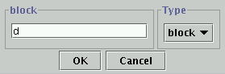

To use the viewer, you will need to define some object-view objects which specify what is in each view you wish to be able to display.
Here is the XML syntax for object-view and related classes. (Other representations correspond to this in the usual way.)
OBJECT-VIEW ::=
<object-view>
<name>STRING</name>
<object-header>STRING</object-header>
<objects><list>...</list></objects>
<types><list>...</list></types>
<properties><list>OBJECT-PROPERTY...</list></properties>
</object-view>
OBJECT-PROPERTY ::=
<object-property
name="SYMBOL"
value-class-name="SYMBOL"
syntax="OBJECT-PROPERTY$SYNTAX">
</object-property>
OBJECT-PROPERTY$SYNTAX ::= number | symbol | string | list | object | default
An object-view has the following fields:
<object-view name="blocks-type">
<types>
<list>
<symbol>block</symbol>
</list>
</types>
<properties>
<list>
<object-property name="size" syntax="symbol" />
<object-property name="colour" syntax="symbol" />
<object-property name="cleartop" syntax="symbol" />
<object-property name="notes" syntax="string" />
</list>
</properties>
</object-view>
A table showing that view might look like this:
| Object | size | colour | cleartop | notes |
|---|---|---|---|---|
| a | large | blue | yes | |
| b | small | red | no | the heaviest block |
| c | small | green | no |
Object-view "whiteboards" are currently packaged as a "tool" that can be added to an I-X Process Panel or similar agent. The tool is not present automatically; you have to add it using the agent extension mechanism. This is done by specifying a command-line argument or props file entry
extension-classes=ix.ip2.ObjectViewExtensionAnother useful parameter is
object-view-directory=directory-name
The directory should contain a set of object-views, one per file. Any of the general-purpose file syntaxes supported by the agent can be used. In practice, this usually means the XML syntax. The directory can also contain files that are written in a syntax that cannot specify an object-view; but any files that could contain an object-view must actually contain one rather than some other sort of object such as a plan.
An "Object Views" entry should then be present in the "Tools" menu. If selected, a window should appear. Initially, it will contain an empty view; the desired view can then be selected from a menu. The window's "File" menu allows new viewing windows to be created, so that several can be in use at once (usually showing different views.)
It is also possible to specify a set of views to be created when the tool is first selected by using an "initial-whiteboards" parameter:
initial-whiteboards=:all initial-whiteboards=comma-separated-list
Editing in the view should be reasonably intuitive. The view is represented as an HTML table, and you should be able to edit within table cells. (If you can edit anything else, or break down the walls between cells, it is a bug and should be reported.) Your changes do not take effect until you press the "Commit changes" button.
Pressing the "New Row" button will pop up a dialog that looks like this:
In that picture, the "object-header" for the view is "block", so that is what is shown above the text area that's used to type in the new object's name.
If a type is selected, the new object will be given that type. Only types that are included in the view will appear in the menu.